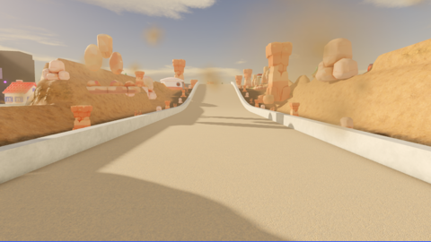
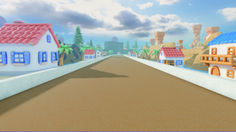
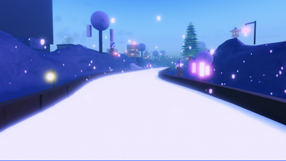
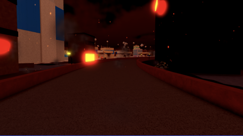
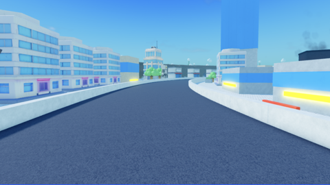

道Tracks道場Pick where your runs start
✕
2

Tournament Wasteland
Selle's tournament ring on the wasteland, where the fate of the world is fought.
3

Pirate Harbor Isle
Island harbor ruled by Arlon's fish-man crew, until Lufy's pirates land.
Your Checkpoint
4

Wisteria Night Mountain
Wisteria-ringed mountain where slayers train and demons like Akazo hunt by moonlight.
5

Burning Cursed City
Sukana fights Jogoh and Mahoraka here, and the streets burn to molten rock.
錠Beat Track 4
6

Hero Academy City
Home of the hero academy, where Shigaraky's villains strike at the next generation.
錠Beat Track 5